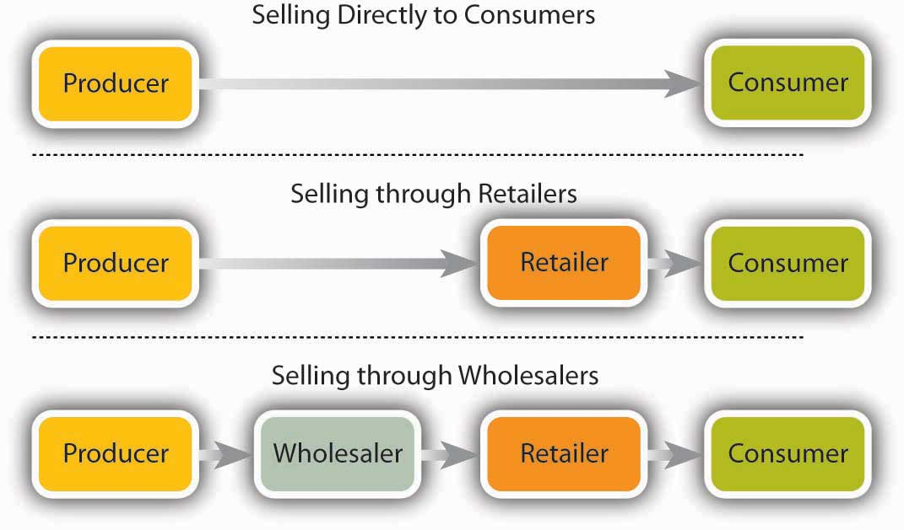
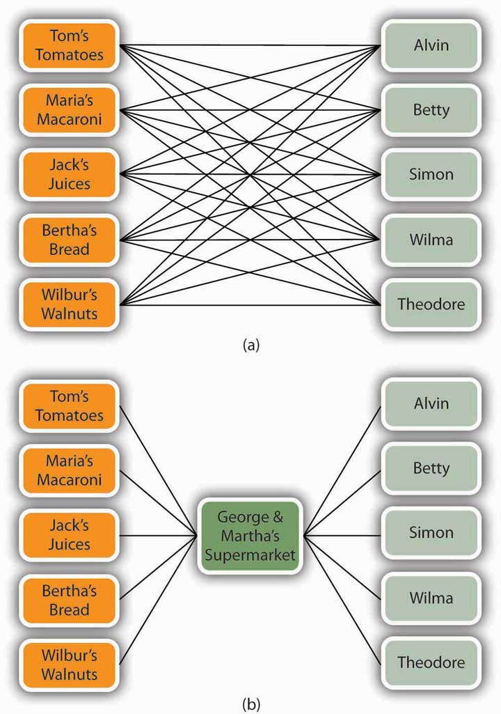
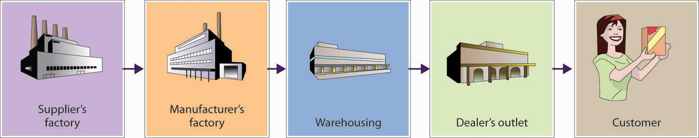

The next element in the marketing mix is place, which refers to strategies for distribution. DistributionAll activities involved in getting the right quantity of a product to the right customer at the right time and at a reasonable cost. entails all activities involved in getting the right quantity of your product to your customers at the right time and at a reasonable cost. Thus, distribution involves selecting the most appropriate distribution channels and handling the physical distribution of products.
Companies must decide how they will distribute their products. Will they sell directly to customers (perhaps over the Internet)? Or will they sell through an intermediaryWholesaler or retailer who helps move products from their original source to the end user.—a wholesaler or retailer who helps move products from their original source to the end user? As you can see from Figure 9.7 "Distribution Channels", various marketing channels are available to companies.
Figure 9.7 Distribution Channels
Many businesses, especially small ones and those just starting up, sell directly to customers. Michael Dell, for example, started out selling computers from his dorm room. Tom First and Tom Story began operations at Nantucket Nectars by peddling home-brewed fruit drinks to boaters in Nantucket Harbor. Most service companies sell directly to their customers; it’s impossible to give a haircut, fit contact lenses, mow a lawn, or repair a car through an intermediary. Many business-to-business sales take place through direct contact between producer and buyer. Toyota, for instance, buys components directly from suppliers.
The Internet has greatly expanded the number of companies using direct distribution, either as their only distribution channel or as an additional means of selling. Dell sells only online, while Adidas and Apple sell both on Web sites and in stores. The eBay online auction site has become the channel of choice for countless small businesses. Many of the companies selling over the Internet are enjoying tremendous sales growth. The largest of the online retailers—Amazon—was founded by Jeff Bezos in 1995 as an online bookstore. In its fifteen-plus years in business, the company has experienced tremendous success, generating more than $34 billion in revenues during 2010. With sales soaring by 51 percent, the future looks bright for the company.“Finance,” Yahoo!, http://finance.yahoo.com/q?s=AMZN&ql=1 (accessed October 13, 2011); “Amazon’s Profit Falls 8% Despite 51% Jump in Sales,” Los Angeles Times, July 27, 2011, http://articles.latimes.com/2011/jul/27/business/la-fi-amazon-earnings-20110727 (accessed October 16, 2011).
The advantage of this approach of selling direct to the customer is a certain degree of control over prices and selling activities: you don’t have to depend on or pay an intermediary. On the other hand, you must commit your own resources to the selling process, and that strategy isn’t appropriate for all businesses. It would hardly be practical for Wow Wee to sell directly to individual consumers scattered around the world.
RetailersIntermediaries who buy goods from producers and sell them to consumers. buy goods from producers and sell them to consumers, whether in stores, by phone, through direct mailings, or over the Internet. Best Buy, for example, buys Robosapiens from Wow Wee and sells them to customers in its stores. Moreover, it promotes Robosapiens to its customers and furnishes technical information and assistance. Each Best Buy outlet features a special display at which customers can examine Robosapien and even try it out. On the other hand, selling through retailers means giving up some control over pricing and promotion. The wholesale price you get from a retailer, who has to have room to mark up a retail price, is substantially lower than you’d get if you sold directly to consumers.
Selling through retailers works fine if you’re dealing with only a few stores (or chains). But what if you produce a product—bandages—that you need to sell through thousands of stores, including pharmacies, food stores, and discount stores. You’ll also want to sell to hospitals, day-care centers, and even college health centers. In this case, you’d be committing an immense portion of your resources to the selling process. Besides, buyers like the ones you need don’t want to deal directly with you. Imagine a chain like CVS Pharmacy negotiating sales transactions with the maker of every single product that it carries in its stores. CVS deals with wholesalersIntermediaries who buy goods from suppliers and sell them to businesses that will either resell or use them. (sometimes called distributors): intermediaries who buy goods from suppliers and sell them to businesses that will either resell or use them. Likewise, you’d sell your bandages to a wholesaler of health care products, which would, in turn, sell them both to businesses like CVS, Kmart, and Giant Supermarkets and to institutions, such as hospitals and college health care centers.
The wholesaler doesn’t provide this service for free. Here’s how it works. Let’s say that CVS is willing to pay $2 a box for your bandages. If you go through a wholesaler, you’ll probably get only $1.50 a box. In other words, you’d make $0.50 less on each box sold. Your profit marginAmount that a company earns on each unit sold.—the amount you earn on each box—would therefore be less.
While selling through wholesalers will cut into your profit margins, the practice has several advantages. For one thing, wholesalers make it their business to find the best outlets for the goods in which they specialize. They’re often equipped to warehouse goods for suppliers and to transport them from the suppliers’ plants to the point of final sale. These advantages would appeal to Wow Wee. If it sold Robosapien’s to just a few retailers, it wouldn’t need to go through a distributor. However, the company needs wholesalers to supply an expanding base of retailers who want to carry the product.
Finally, intermediaries, such as wholesalers, can make the distribution channel more cost-effective. Look, for example, at Figure 9.8 "What an Intermediary Can Do". Because every contact between a producer and a consumer incurs costs, the more contacts in the process (panel a), the higher the overall costs to consumers. The presence of an intermediary substantially reduces the total number of contacts (panel b).
Figure 9.8 What an Intermediary Can Do
Buyers from the stores that sell Robosapiens don’t go to the Wow Wee factory (which happens to be in China) to pick up their orders. The responsibility for getting its products to customers, called physical distributionActivities needed to get a product from where it was manufactured to the customer., belongs to Wow Wee itself. To keep its customers satisfied, Wow Wee must deliver robots on time, in good shape, and in the quantity ordered. To accomplish this, Wow Wee must manage several interrelated activities: warehousing, materials handling, and transportation.
After the robots have been packaged, they’re ready for sale. It would be convenient if they’ve already been sold and only needed to be shipped to customers, but business-to-business (B2B) transactions don’t always work out this way. More often, there’s a time lag between manufacture and delivery. During this period, the robots must be stored somewhere. If Wow Wee has to store a large volume over an extended period (perhaps a month or two right before the holiday season), it will keep unsold robots in a storage warehouseBuilding used for the temporary storage of goods.. On the other hand, if Wow Wee has to hold them only temporarily while they’re en route to their final destinations, they’ll be kept in a distribution centerLocation where products are received from multiple suppliers, stored temporarily, and then shipped to their final destinations..
Wal-Mart, for example, maintains forty regional U.S. distribution centers at which it receives goods purchased from suppliers, sorts them, and distributes them to 4,400 stores, superstores, and Sam’s Clubs around the country.Wikipedia, s.v. “Walmart,” accessed October 19, 2011, http://en.wikipedia.org/wiki/Walmart#Walmart_Stores_U.S. Its efficiency in moving goods to its stores is a major factor in Wal-Mart’s ability to satisfy customer needs. How major? “The misconception,” says one senior executive “is that we’re in the retail business, but in reality, we’re in the distribution business.”Andres Lillo, “Wal-Mart Gains Strength from Distribution Chain,” Home Textiles Today, March 24, 2003, http://www.hometextilestoday.com/article/495437-Wal_Mart_gains_strength_from_distribution_chain.php (accessed May 21, 2006); “Logistics Careers,” Walmart, http://walmartstores.com/careers/7741.aspx (accessed October 15, 2011); Wikipedia, s.v. “Walmart,” accessed October 15, 2011, http://en.wikipedia.org/wiki/Walmart#Walmart_Stores_U.S.
Making, storing, and distributing Robosapien entails a good deal of materials handlingProcess of physically moving or carrying goods during production, warehousing, and distribution.—the process of physically moving or carrying goods during production, warehousing, and distribution. Someone (or some machine) needs to move both the parts that go into Robosapien and the partially finished robot through the production process. In addition, the finished robot must be moved into storage facilities and, after that, out of storage and onto a truck, plane, train, or ship. At the end of this leg of the trip, it must be moved into the store from which it will be sold.
All these activities draw on company resources, particularly labor, and there’s always the risk of losing money because the robot’s been damaged during the process. To sell goods at competitive prices, companies must handle materials as efficiently and inexpensively as possible. One way is by automating the process. For example, parts that go into the production of BMWs are stored and retrieved through automated sequencing centers.David Maloney, “Warehouse of the Month / Destination: Production,” WITRON, August 1, 2003. Cars are built on moving assembly lines made of “skillets” large enough to hold workers who move along with the car while it’s being assembled. Special assistors are used to help workers handle heavy parts. For hard-to-reach areas under the car, equipment rotates the car 90 degrees and sets the undercarriage at waist level. Records on each car’s progress are updated by means of a bar code that’s scanned at each stage of production.“BMW Oxford Plant: The MINI Plant,” Automotive Intelligence, July 10, 2001, http://www.autointell.com/european_companies/BMW/mini/oxford-plant/bmw-oxford-plant-01.htm (accessed October 13, 2011). Also see “BMW Dingolfing (Germany) Virtual Plant Tour,” BMW, http://www.bmw-plant-dingolfing.com/, (accessed October 19, 2011).
Another means of reducing materials-handling costs is called just-in-time productionSystem for reducing inventories and costs by requiring suppliers to deliver materials just in time to go into the production process.. Typically, companies require suppliers to deliver materials to their facilities just in time for them to go into the production process. This practice cuts the time and cost entailed by moving raw materials into and out of storage.
There are several ways to transport goods from manufacturing facilities to resellers or customers—trucks, trains, planes, ships, and even pipelines. Companies select the best mode (or combination of modes) by considering several factors, including cost, speed, match of transport mode to type of good, dependability, and accessibility. The choice usually involves trade-offs. Planes, for example, are generally faster but cost more than other modes. Sending goods by cargo ship or barge is inexpensive but very slow (and out of the question if you want to send something from Massachusetts to Chicago). Railroads are moderately priced, generally accessible, and faster than ships but slower than planes. They’re particularly appropriate for some types of goods, such as coal, grain, and bulky items (such as heavy equipment and cars). Pipelines are fine if your product happens to be petroleum or natural gas. Trucks, though fairly expensive, work for most goods and can go just about anywhere in a reasonable amount of time.
According to the U.S. Department of Transportation,U.S. Department of Transportation, Bureau of Transportation Statistics, Commercial Freight Activities in the U.S. by Mode of Transportation (1993, 1997, and 2002), http://www.bts.gov/publications/freight_shipments_in_america/html/table_01.html (accessed October 17, 2011). trucks are the transportation of choice for most goods, accounting for 65 percent of U.S. transportation expenditures. Trucks also play an important role in the second highest category—multimodal combinations, which account for 11 percent of expenditures. Multimodal combinations include rail and truck and water and truck. New cars, for example, might travel from Michigan to California by rail and then be moved to tractor trailers to complete their journey to dealerships. Water accounts for 9 percent of expenditures, air for 8 percent. When used alone, rail accounts for only 4 percent but is commonly combined with other modes. Pipelines account for 3 percent of expenditures. Crowded highways notwithstanding, the economy would come to a standstill without the two million workers that make up the U.S. trucking industry.U.S. Department of Labor, Bureau of Labor Statistics, Truck, Transportation and Warehousing, Career Guide to Industry, http://bls.gov/oco/cg/cgs021.htm (accessed October 17, 2011).
Before we go on to the final component in the marketing mix—promotion—let’s review the elements that we’ve discussed so far: product, price, and place. As we’ve seen, to be competitive, companies must produce quality products, sell them at reasonable prices, and make them available to customers at the right place at the right time. To accomplish these three tasks, they must work with a network of other firms, both those that supply them with materials and services and those that deliver and sell their products. To better understand the links that must be forged to create an effective network, let’s look at the steps that the candy maker Just Born takes to produce and deliver more than one billion Marshmallow Peeps each year to customers throughout the world. Each day, the company engages in the following process:
This process requires considerable cooperation not only among individuals in the organization but also between Just Born and its suppliers and dealers. Raw-materials suppliers, for instance, must work closely with Just Born purchasing managers, who must, in turn, work with operations managers in manufacturing at Just Born itself. People in manufacturing have to work with operations managers in the warehouse, who have to work with retail dealers, who have to work with their customers.
If all the people involved in each of these steps worked independently, the process of turning raw materials into finished Marshmallow Peeps and selling them to customers would be inefficient (to say the least). However, when everyone works in a coordinated manner, all parties benefit. Just Born can make a higher-quality product at a lower cost because it knows that it’s going to get cooperation from suppliers whose livelihood, after all, depends on the success of customers like Just Born: suppliers can operate more efficiently because they can predict the demand for their products (such as sugar and food coloring). At the other end of the chain, dealers can operate efficiently because they can depend on Just Born to deliver a quality product on time. The real beneficiary is ultimately the end user, or customer: because the process that delivers the product is efficient, its costs are minimized and its quality is optimized. The customer, in other words, gets a higher-quality product at a lower price.
As you can see in Figure 9.10 "A Simplified Supply Chain", the flow that begins with the purchase of raw materials and culminates in the sale of the Marshmallow Peeps to end users is called the supply chainFlow that begins with the purchase of raw materials and ends in the sale of a finished product to an end user.. The process of integrating all the activities in the supply chain is called supply chain management (SCM)Process of integrating all the activities in the supply chain.. As you can see from our discussion so far, SCM requires a high level of cooperation among the members of the chain. All parties must be willing to share information and work together to maximize the final customer’s satisfaction.Lawrence D. Fredendall and Ed Hill, Basics of Supply Chain Management (Boca Raton, FL: St. Lucie Press, 2001), 8.
Figure 9.10 A Simplified Supply Chain
Managing your supply chain can be difficult, particularly if your company has large seasonal fluctuations.Simone Kaplan, “Easter in November, Christmas in July,” CIO Magazine, November 1, 2001, http://books.google.com/books?id=1wwAAAAAMBAJ&pg=PA96&lpg=PA96&dq=Simone+Kaplan,+%E2%80 %9CEaster+in+November,+Christmas+in+July,%E2%80%9D+CIO+Magazine&source= bl&ots=96IYFzFkX0&sig=Jj2rZWMASZrMPYvUuKzddrc-YZE&hl=en&ei=vJ-XTr 2OOeH u0gHfvaGvBA&sa=X&oi=book_result&ct=result&resnum=1&ved=0CB4Q6AEwAA #v=onepage&q&f=false (accessed October 13, 2011). This is certainly true at Just Born. Even though it has a Marshmallow Peep for every season (heart Peeps for Valentine’s Day, spooky Peeps for Halloween, patriotic Peeps for July Fourth, and so on), the biggest problem rests with the standard yellow Marshmallow Peep that provides a major spike in sales each spring. Without careful supply chain management, there would be either too many or two few yellow Marshmallow Peeps—both big problems. To reduce the likelihood of either situation, the manager of the company’s supply chain works to ensure that all members of the chain work together throughout the busy production season, which begins each fall. Suppliers promise to deliver large quantities of ingredients, workers recognize that they will be busy through February, and dealers get their orders in early. Each member of the chain depends on the others to meet a mutually shared goal: getting the right quantity of yellow Marshmallow Peeps to customers at the right time.
But what if a company has multiple sales spikes (and lulls)? What effect does this pattern have on its supply chain? Consider Domino’s Pizza. Have you ever thought about what it takes to ensure that a piping-hot pizza will arrive at your door on Super Bowl Sunday (Domino’s busiest day of the year)? What about on the average weekend? How about when the weather’s bad and you just don’t want to go out? Clearly, Domino needs a finely tuned supply chain to stay on top of demand. Each year, the company sells about four hundred million pizzas (more than one pizza for every man, woman, and child in the United States). Its suppliers help to make this volume possible by providing the company with about one hundred fifty million pounds of cheese and toppings. Drivers do their part by logging nine million miles a week (the equivalent of 37.5 round trips to the moon every week).
How are these activities managed? Dominos relies on a software system that uses historical data to forecast demand by store; determines, orders, and adjusts supplies; fills staffing needs according to expected sales levels; and facilitates the smooth flow of accurate information among members of the chain. All this coordination is directed at a single goal—satisfying the largest possible number of end users.“Supply Chain Management Helps Domino’s Deliver,” Retail Solutions Online, October 1, 2000, http://www.retailsolutionsonline.com/article.mvc/Supply-Chain-Management-Helps-Dominos-Deliver-0002 (accessed October 13, 2011).
Supply chain management helps companies produce better products at lower costs and to distribute them more effectively. Remember, however, that effective supply chain management doesn’t necessarily guarantee success. A company must also persuade consumers to buy its products, rather than those of its competitors, and the key to achieving this goal is delivering the most value.
Today’s consumers can choose from a huge array of products offered at a range of prices through a variety of suppliers. So how do they decide which product to buy? Most people buy the product that gives them the highest value, and they usually determine value by considering the three factors that many marketers call the customer value triadThree factors that customers consider in determining the value of a product: quality, service, and price.: quality, service, and price.Philip Kotler, Marketing Management, 11th ed. (Upper Saddle River, NJ: Prentice Hall, 2003), 11. In short, consumers tend to select the product that provides the best combination of these factors.
To deliver high customer value, a company must monitor and improve its value chainEntire range of activities involved in delivering value to customers.—the entire range of activities involved in delivering value to customers.The concept of the value chain was first analyzed by Michael Porter in Competitive Advantage: Creating and Sustaining Superior Performance (New York: The Free Press, 1985). Some of these activities arise in the process of supply chain management—obtaining raw materials, manufacturing products, getting finished goods to customers. Others take place outside the supply chain, particularly those associated with marketing and selling products and with providing customer support. In addition, companies need to find ways of creating value by improving the internal operations—procurement, research and development, human resource management, and financial management—that support their primary value-chain activities.
The idea is fairly simple: by focusing on the interrelated links in its value chain, a company can increase product quality, provide better service, and cut prices. In other words, it can improve its quality-service-price mix, thereby making its products more competitive.
(AACSB) Analysis
Students at Penn State University can take a break from their studies to visit an on-campus ice cream stand called the Creamery. Milk for the ice cream comes from cows that graze on university land as part of a program run by the agriculture school. Other ingredients, including sugar and chocolate syrup, are purchased from outside vendors, as are paper products and other supplies. Using your personal knowledge of ice cream stand operations (which probably comes from your experience as a customer), diagram the Creamery’s supply chain. How would the supply chain change if the company decided to close its retail outlet and sell directly to supermarkets?